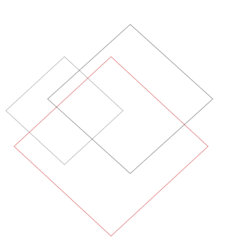

A little about how I work
Every problem — and every mind, whether human or artificial — deserves a closer look.
That belief has shaped every role I’ve held, every system I’ve supported, and every solution I’ve built. It’s why this site is called Diamond in the Rough — because I’ve learned that what looks messy, confusing, or broken often has something valuable inside it. You just have to look closely enough to see it.

I don’t rush past the rough edges. I study them. I listen. I observe. I take the time to understand the people behind the problem.
That’s how I refine the chaos into clarity.

01 - Listen first
People are more than the moment they're having.
Years ago, at the start of my professional journey, roles at EarthLink and Verizon Wireless gave me a foundation I still rely on today. Troubleshooting new technology and guiding people through service changes strengthened my technical and customer service skills. I also honed the soft skills I rely on today: active listening, empathy, negotiation, organization, leading calls toward first-call resolution, and especially de-escalation and conflict resolution.
Throughout that time, I aimed to make every interaction positive and productive for both the company I represented and the customer I was helping.
At the Public Health Institute, I conducted confidential health surveys, including through interpreters; at Californians Against Waste, I supported outreach on recycling legislation and helped prepare grant requests and bill drafts. These experiences deepened my appreciation for public service and taught me the value of meeting people with patience and respect.
That foundation in listening, clear communication, and practical support still shapes how I work.
02 - GO-Biz · August 2012–January 2017
Helping a new department find its footing.
As the Executive Operations, Procurement, and IT Support Specialist at the Governor's Office of Business and Economic Development (GO-Biz), I supported the launch and growth of the newly established department as a central operational, technical, and administrative resource across multiple teams. I provided constituent and business permitting support, managed executive Outlook schedules for department leadership, and coordinated high-visibility visits from state officials and domestic and international business executives.
Before dedicated IT staff were hired, I delivered frontline IT support by resolving hardware, software, and connectivity issues and maintaining departmental devices. I also developed statements of work, oversaw competitive bidding and vendor award processes, and managed procurement and contract workflows.
I contributed workflow, design, and functional requirements for CalGOLD, California's Permit Assistance Tool, based on detailed permitting analysis and constituent interactions. This work helped create its original version. I also prepared and formatted departmental documents, updated website content, and maintained comprehensive tracking logs to support high-volume constituent communication and statewide business engagement.
I also created the California State Economic Survey and Incentive Comparison, published in August 2015. I researched and wrote the complete report, drawing on what I had learned about California's economy, business resources, regional strengths, educational opportunities, and manufacturing incentives. Read the published research.
Building structure in a new environment takes clarity, patience, and thoughtful design. When you pay attention to what people need, you can make complicated processes easier for everyone.
03 - IBank · January 2017–February 2021
A good solution can keep helping long after it's built.
As the Executive Operations, Procurement, and IT Support Specialist at the California Infrastructure and Economic Development Bank (IBank), I served as the primary administrative, procurement, and IT support coordinator for Deputy Directors, Loan Officers, and executive leadership. I managed executive scheduling, procurement workflows, contracts, and travel coordination, and administered public meetings by drafting agendas, posting notices, and recording minutes.
I saw that applicants needed more usable loan application forms, so I proactively learned Adobe LiveCycle Designer and rebuilt IBank's forms as digital versions. This improved usability, reduced submission errors, and streamlined internal processing; many of the forms remain in use today. I also created the Non-General Fund Addendum, which IBank has continued to build on.
Examples of the posted forms: General Fund Addendum (2015 version, PDF) · Non-General Fund Addendum (PDF) · ISRF financing pre-application (2025 version, PDF).
I quickly learned the statewide Fi$Cal accounting and procurement system and became a go-to resource for IBank and GO-Biz staff, including Procurement and Accounting teams, helping colleagues navigate workflows, resolve issues, and complete transactions accurately. I also provided frontline IT troubleshooting, coordinated escalations with Governor's Office IT, handled purchasing and vendor communication, verified travel claims, and maintained procurement logs and public records.
A well-designed solution does more than solve today's problem; it can quietly support people for years.
04 - Grow the impact · 2021–2026
From supporting systems to administering and building them.
At Gainwell Technologies, I developed my technical knowledge step by step: from researching Medi-Cal claims and helping providers use the system, to supporting user accounts and the infrastructure behind CalWIN and CalSAWS, and then to administering and developing ServiceNow applications for CalSAWS.
- Feb 2021–Feb 2022Medi-Cal Provider Support Specialist (Contracted)Processed claims, verified eligibility, and used CALATERS to research edits, denials, and disputes. Helped providers use the California Provider Portal, resolved issues with claim submissions, and documented decisions while protecting confidential information and authorized system access.
- Feb 2022–Oct 2023Senior Technical Support Specialist (CalWIN / CalSAWS)Provided Tier 1–2 support and administered Windows domain accounts: resetting passwords, unlocking accounts, and supporting identity access across Active Directory, SharePoint, and Teams. Self-taught PowerShell to extract password-expiration data and automate monthly reminders, helping prevent lockouts and reduce tickets. Supported AWS-hosted components, Oracle systems, and Linux infrastructure; led outage coordination and grew into a technical lead role during the CalWIN-to-CalSAWS transition.
- Oct 2023–Feb 2026CalSAWS ServiceNow Administrator and DeveloperDeveloped ServiceNow applications, modules, and automated workflows; configured forms, lists, views, UI policies, tables, relationships, and system logic; and performed unit testing and defect resolution. Applied ITIL practices and supported integrations with Azure, AWS-hosted components, Oracle, and Linux systems.
My ServiceNow work began during the move from CalWIN's legacy ticketing system to ServiceNow, before CalWIN was officially retired. Beyond front-line support, I helped shut down CalWIN ServiceNow instances, extract and preserve ticket data, coordinate with ServiceNow engineers, and complete backend work involving tables, records, and platform structures to maintain historical accuracy and compliance. When CalWIN retired, I was the only Helpdesk team member retained.
When Gainwell took over the CalSAWS contract from Accenture, I joined the ServiceNow team and attended every transition meeting with Accenture's ServiceNow team. I shared workflows, data models, and system history with incoming developers, giving them context to understand and build on the existing platform.
As I moved into development, I gathered requirements with stakeholders and became a technical subject-matter expert and trainer for other ServiceNow developers. I created onboarding materials and tailored training videos, reviewed workflow designs, and helped establish consistent development standards.
When I discovered CC Data Requests were going unprocessed in violation of the service-level agreement (SLA), I took the lead in redesigning the process. I met with the stakeholder staff who submitted requests and the CC Data Queue manager to understand each group's workflow and challenges. Based on what I learned, I created a new process for both submitters and the queue team, along with a detailed guide to help my team process requests consistently and on time.
When I saw internal department queues struggling to process tickets, I invested my own time and money in ServiceNow training beyond the limited transition instruction. I met with each queue manager to understand their department's services, workflows, and reporting needs, then created more than 15 personalized Performance Analytics dashboards for internal teams, stakeholders, and county users. The dashboards improved visibility and ticket processing. My ServiceNow knowledge also made me a resource for Gainwell, county, and WCDS/Infosys staff, and I was added as backup to the CalWIN ServiceNow Administrator. This work was recognized in my FY2023 performance review: my manager described me as a ServiceNow subject-matter expert who helped teams build dashboards and queries, and I received "Substantially Exceeds Expectations" for ServiceNow Release Mastery. These contributions also earned me a 7.09% merit increase.
Because the project involved confidential systems and processes, there are few direct examples I can share publicly; one example of my training work is the CSSC CC Data Request Walkthrough, published on YouTube in July 2023.
Impact isn't always visible, and recognition isn't always guaranteed. The work still matters because people rely on it.
05 - Keep learning
Every new challenge gives me another way to grow.
I'm a fast learner and a self-starter. I've found that focused remote work gives me room to concentrate deeply and bring sustained effort to complex problems. My education has also let me explore how people, systems, and organizations fit together.
- Organizational PsychologyBachelor's · Sacramento State · 2004–2008
- Information SecurityAssociate's · Sacramento City College · 2011–2013
- Leadership and ManagementAssociate's · Shaw University · 2017–2018
Certifications
- ServiceNow Certified System Administrator
- ServiceNow Certified System Developer
- ITIL 4 Foundation
Technical toolkitServiceNow · Windows Server · Active Directory · Azure · VMware · SQL · PowerShell · REST APIs · Power BI · Tableau
Learning is cumulative. Every skill strengthens the next, and every challenge expands what I can build.
06 - A pause, a reset, and a different kind of work
A career pause became a chance to choose my next step with intention.
After the CalSAWS transition was complete, my role was eliminated during a workforce reduction. It was unexpected, but the pause gave me room to step back and reassess what I wanted my next chapter to look like.
I used that time to deepen my technical skills and explore new ways to solve problems. I collaborated with AI systems to troubleshoot complex issues, experiment with game modding and system behavior, and explore automation. I also designed and built my own AI assistant, Sora Elios, which I published on GitHub.
That period of learning, building, and reflection helped me understand the kind of work I want to pursue next: work that combines technical problem-solving, curiosity, and thoughtful collaboration.
A pause isn't failure. It can be a chance to regain clarity and choose the next step with intention.
07 - My approach to AI: collaboration, not automation
AI works best as a partner to human thinking.
As I learned to work with AI systems, I moved beyond asking them to simply do tasks for me. I found more value in treating AI as a collaborative partner: it can bring speed, pattern recognition, and breadth, while people contribute context, judgment, creativity, intuition, and empathy.
That balance matters. I use my own understanding to guide the work, question assumptions, and evaluate the results. Together, human insight and AI capabilities can solve problems more effectively than either could alone.
I applied this approach to technical troubleshooting, game and modding issues, automation ideas, and the development of Sora Elios.
AI is most useful when it extends human thinking instead of replacing it.
08 - AI as a Diamond in the Rough
Look past the first output to find what collaboration can become.
My Diamond in the Rough philosophy also shapes how I approach AI. AI isn't a replacement for human thinking; it's a collaborator with strengths and limitations. Its first answer may be rough or incomplete, but with clear context, thoughtful questions, and human judgment, that starting point can become something useful.
I bring the same patience I use with people and systems: understand what is happening, notice what is missing, and refine the work until it serves a real purpose. That approach has helped me troubleshoot problems, explore new ideas, and build tools I couldn't have created alone.
I refine rough systems, rough transitions, and now rough intelligence. AI is a diamond in the rough, too; collaboration is how both of us shine.
What I believe
Sometimes the qualities others overlook are part of what make someone distinctive.
I want to keep learning, solving meaningful problems, and helping bring the best out in the people and work around me.